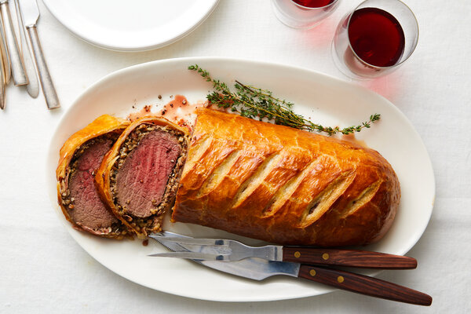

Beef wellington

Description
Gordon Ramsay's version of the classic steak dish – a showstopping centrepiece on a special occasion
Ingredients
- a good beef fillet (preferably Aberdeen Angus) of around 1kg/2lb 4oz
- 3 tbsp olive oil
- 250g/9oz chestnut mushroom, include some wild ones if you like
- 50g/2oz butter
- 1 large sprig fresh thyme
- 100ml/3.5 fl oz dry white wine
- 12 slices prosciutto
- 500g/1lb 2oz pack puff pastry, thawed if frozen
- a little flour, for dusting
- 2 egg yolks beaten with 1 tsp water
Steps
- Heat oven to 220C/fan 200C/gas 7.
- Sit the 1kg beef fillet on a roasting tray, brush with 1 tbsp olive oil and season with pepper,
then roast for 15 mins for medium-rare or 20 mins for medium. When the beef is cooked to your liking,
remove from the oven to cool, then chill in the fridge for about 20 mins.
- While the beef is cooling, chop 250g chestnut (and wild, if you like) mushrooms as finely as possible so they have the texture of
coarse breadcrumbs. You can use a food processor to do this, but make sure you pulse-chop the mushrooms so they don’t become a slurry.
- Heat 2 tbsp of the olive oil and 50g butter in a large pan and fry the mushrooms on a medium heat, with 1 large
sprig fresh thyme, for about 10 mins stirring often, until you have a softened mixture.
- Season the mushroom mixture, pour over 100ml dry white wine and cook for about 10 mins until all the wine has been absorbed.
The mixture should hold its shape when stirred.
- Remove the mushroom duxelle from the pan to cool and discard the thyme.
- Overlap two pieces of cling film over a large chopping board. Lay 12 slices prosciutto on the cling film, slightly overlapping, in a double row.
- Spread half the duxelles over the prosciutto, then sit the fillet on it and spread the remaining duxelles over.
- Use the cling film’s edges to draw the prosciutto around the fillet, then roll it into a sausage shape, twisting the ends of cling film to tighten it as you go.
- Chill the fillet while you roll out the pastry.
- Dust your work surface with a little flour. Roll out a third of the 500g pack of puff pastry to a 18 x 30cm strip and place on a non-stick baking sheet.
- Roll out the remainder of the 500g pack of puff pastry to about 28 x 36cm.
- Unravel the fillet from the cling film and sit it in the centre of the smaller strip of pastry.
- Beat the 2 egg yolks with 1 tsp water and brush the pastry’s edges, and the top and sides of the wrapped fillet.
- Using a rolling pin, carefully lift and drape the larger piece of pastry over the fillet, pressing well into the sides.
- Trim the joins to about a 4cm rim. Seal the rim with the edge of a fork or spoon handle.
- Glaze all over with more egg yolk and, using the back of a knife, mark the beef Wellington with long diagonal lines taking care not to cut into the pastry.
- Chill for at least 30 mins and up to 24 hrs. Heat oven to 200C/fan 180C/gas 6.
- Brush the Wellington with a little more egg yolk and cook until golden and crisp – 20-25 mins for medium-rare beef, 30 mins for medium. Allow to stand for 10 mins before serving in thick slices.
Recipes main page